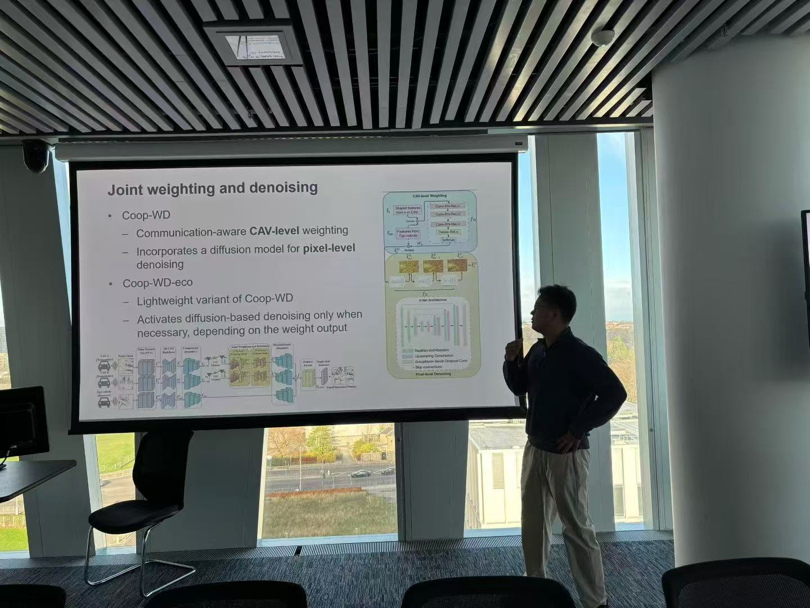

Latest updates from the Aged.AI research group
6 March 2026
In our monthly group meeting, Wanjie Zhong gave her first research presentation after joining us and starting her PhD research journey in xx. She introduced her current research on model compression (pruning), inspired by three state-of-the-art works:
14 November 2025
Dr. Chenguang Liu from Durham University was invited to talk about his research on collaborative perception for autonomous driving, presenting his work on joint weighting and denoising frameworks including Coop-WD and its lightweight variant Coop-WD-eco.

17 October 2025
In our monthly group meeting, Zixiang Tang presented his PhD project, sharing his current research progress and plans with the group.
22 August 2025
Chris Moorhead presented his recently accepted conference paper at the monthly group meeting:
Moorhead, Christopher R., et al. "Fish Detection and Size Estimation Using Curved Ellipse Modeling and Voting-Based Matching." 2025 30th International Conference on Automation and Computing (ICAC). IEEE, 2025.
25 July 2025
Iniakpokeikiye (Peter) Thompson presented his recently accepted conference paper at the monthly group meeting:
Thompson, Iniakpokeikiye Peter, Yi Dewei, and Reiter Ehud. "Mobile Phone Sensor-based Nigerian Driving Dataset to Detect Alcohol-influenced Behaviours." 2025 30th International Conference on Automation and Computing (ICAC). IEEE, 2025.
27 June 2025
In our monthly group meeting, Bangqi Liu presented his PhD project, sharing his current research progress and plans with the group.